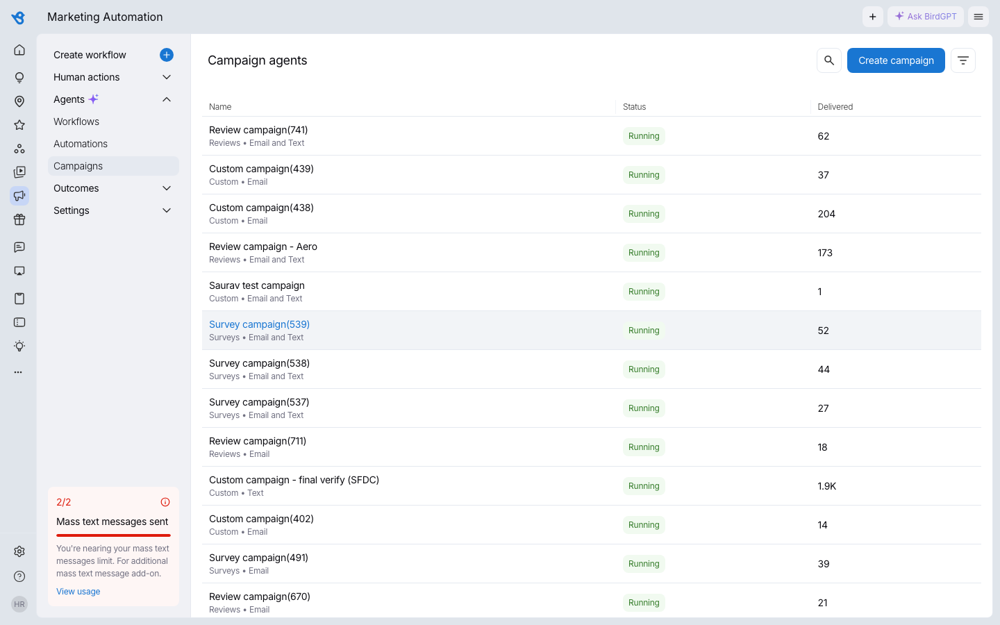
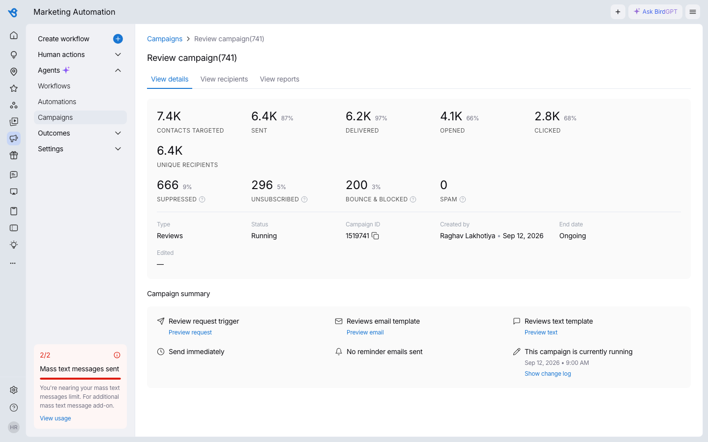
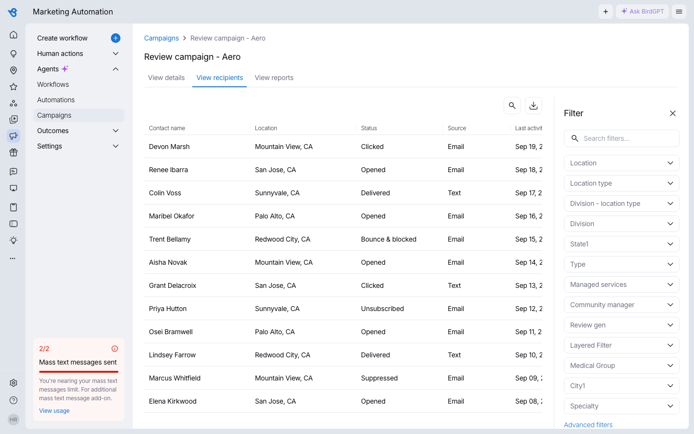
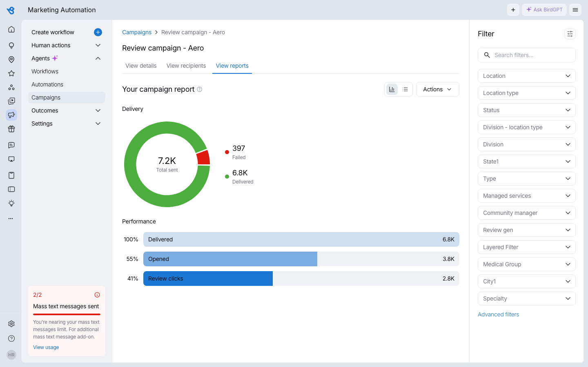

A campaign management surface built inside an existing multi-product console: a searchable, filterable list of email/text campaigns, a per-campaign detail view with a full delivery funnel (targeted → sent → delivered → opened → clicked, plus every drop-off reason along the way), a recipient-level breakdown with saved filters, and a chart/list report view.
Every campaign — review requests, surveys, and custom sends — in one sortable, searchable table, with a live status pill and a delivered count at a glance.

Clicking into a campaign surfaces the full funnel with a percentage at every step relative to the stage before it — not just aggregate totals. The four ways a contact can fail to receive a message are split into two groups with tooltips explaining each:

A per-recipient table (contact, location, status, source, last activity) alongside a persistent, multi-select filter panel — status, location, division, and a dozen other org-specific dimensions.

A donut breaks delivery into pre-delivery failure / post-delivery failure / delivered, backed by a "Failure reasons" panel that expands each bucket into its underlying causes. A toggle switches the whole report between a chart view and a plain list view of the same numbers.

Note: all campaign names, contacts, and numbers shown here are placeholder data generated for this case study — no real customer or business data is used.